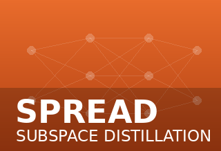
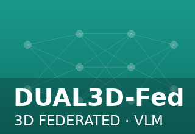
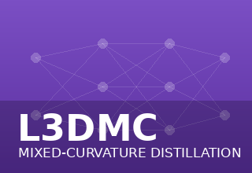
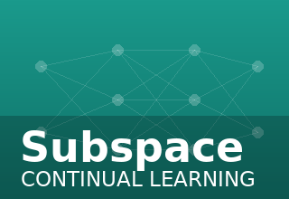
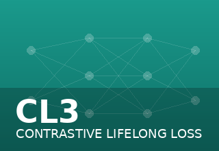
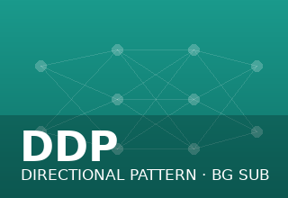

I am a Postdoctoral Fellow at CSIRO, where I develop intelligent perception and learning systems that enable robots to perceive, learn, and adapt in complex real-world environments. My research spans computer vision, robot perception, embodied AI, and representation learning, with a focus on building robust, generalizable AI models for autonomous robotics.
Previously, I completed my PhD at Monash University under the supervision of Dr. Mehrtash Harandi and Dr. Peyman Moghadam, where I studied lifelong learning—developing AI systems that continuously acquire new knowledge while preserving previously learned capabilities. My research has been published in leading venues, including Neural Networks, ICRA (CORE A*), and MICCAI (CORE A). I also serve as a reviewer for IEEE TPAMI, ICLR, and other premier AI conferences and journals.
Beyond academia, my experience as a Computer Vision Engineer has strengthened my ability to translate research into practical robotic systems. I am passionate about advancing trustworthy and reproducible AI and enjoy exploring new ideas, technologies, and collaborations that push the boundaries of intelligent robotics.
Intelligent perception systems for real-world robots.
Vision transformers and large-scale models.
From perception to spatial intelligence.
Learning continuously in dynamic environments.
One paper accepted for presentation at the RSS 2026 workshop on Data-Centric Robotics, Jul 17, 2026, Sydney, Australia.
One paper accepted for presentation at the IEEE IROS 2026, Sep 27 – Oct 1, 2026, Pittsburgh, Pennsylvania, USA.
Two papers accepted for presentation at the IEEE ICRA 2026, June 1–5, 2026, Vienna, Austria.
One paper accepted for publication by IEEE Access.
One paper accepted for presentation at the IEEE ICRA 2025, May 19–23, 2025, Atlanta, USA.
Graduated from Monash University, Australia.
Started as a Postdoctoral Research Fellow with Technology, CSIRO, Australia.
Began Ph.D. in Lifelong Learning with Deep Neural Networks at Monash University, Australia.






Robotics & Embodied AI
Computer Vision
3D Scene Understanding
Visual Place Recognition
Depth & Occupancy Prediction
Lifelong & Continual Learning
Developing robust, generalizable perception systems for real-world robotics.
Leveraging foundation models and 3D geometry for scalable solutions.
Enabling robots to perceive, localize and adapt in dynamic environments.
Interested in continual learning, robot vision, or foundation models for robotics? I'd love to connect and explore ideas together.
kaushik.roy@csiro.au